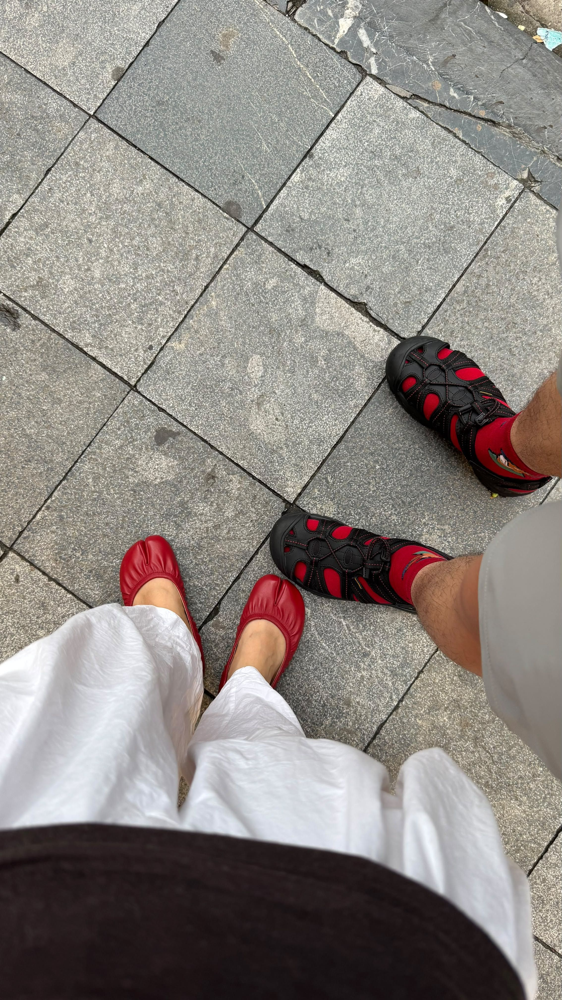

About This Project
If you see a broken icon instead of the picture above, make sure you have a folder named images in your repository, and your file is exactly named my-photo.jpg.
A simple showcase site hosted via GitHub Pages.

If you see a broken icon instead of the picture above, make sure you have a folder named images in your repository, and your file is exactly named my-photo.jpg.